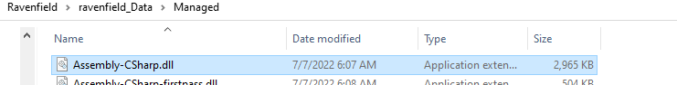

Unity Mono Game Hacking
In this write-up, I will share how Unity mono games can be reversed to create a simple hack. After that, I will showcase a proof-of-concept injector that I have made which will inject any hack to a target mono game.
The first part covers information about Unity, and the creation of the hack. I chose to reverse the game Ravenfield, which is a shooter game developed by SteelRaven7. It is a fun game to play, and I highly suggest checking it out. The second part covers the creation of the mono injector, which has I have coded in Rust. I chose this language as I am currently learning it right now. I do apologize if my code is not implementing the best practices.
Before we get started, this write-up is for educational purposes. I do not condone cheating in any way, and just want to share my learnings.
Part One
Unity is a cross-platform game engine developed by Unity Technologies. It is considered easy to use for beginner developers, and is popular for indie game development. Many games are being actively developed with Unity engine today, which is one of the reasons why I decided to research more on this game engine.
By default, Unity games use the mono scripting backend to compile code at runtime. Unity uses a fork of Mono, which is an open-source implementation of Microsoft’s .NET Framework. This allows developers to build games for many different platforms.
We will hack a Unity game that uses mono: Ravenfield. It is a first-person shooter game which I enjoy playing, and will serve as an example of how Unity mono games can be hacked. Note that the information from this write-up can not only be applied to Ravenfield, but any Unity mono game.
Part 1: Creating a Hack
Getting Information from Unity Scripts
Unity allows developers to write scripts that instruct how the game will behave. This is essentially the game logic that contains information such as what to do when a button is clicked, or how x will effect y in the game.
These Unity scripts that are written in C# get translated to Intermediate Language, or IL. IL has a lot of metadata so that it can be compiled onto different processor architectures. Thus, the classes and methods in these scripts remain largely intact.
Before we can write a hack, we must understand how the game works. Typically, reversing a game usually involve reading long lines of assembly code, and debugging the game. This is a long process, however, in our case it is much simpler. Unity scripts can be decompiled to readable source code because of the IL’s metadata.
Unity compiles all scripts into this file.
Let us locate the file, “Assembly-CSharp.dll”. This file, or so-called assembly, is a C# code library that contains the compiled classes and structs of the scripts of the game. After decompiling it, we will be able to find namespaces and classes, and identify what we can change to alter the gameplay.
It is located in the managed folder, of which the game is located:


Figure 1: The weapon that the actor (ActorManager / local player) is using.

Figure 2: Reload function of public class Weapon : MonoBehaviour
In Ravenfield, these scripts are somewhat responsible for how the player’s weapon should behave. It is clear that this there are different weapons that a player can hold, as we can see from Figure 1. Additionally, the Reload() function from Figure 2 reveals that there are member variables for the Weapon class that we can be modified such as this.holdingFire, this,reloading, this.ammo, etc.
Writing an Ammo Modifier
Using the information from earlier, we can create a C# script containing our ammo hack.
In our C# class library, Assembly-CSharp.dll and all UnityEngine related dll files will be added as references. Assembly-CSharp.dll contains the compiled code from Ravenfield, and will act as our dependency for our hack. The UnityEngine related DLL files contains methods needed to get our hack properly load, and will act as our “base”. We add these dlls files because it allows our project to use classes, methods, and other types defined from the game.


Our Loader class will use a “GameObject”, which essentially is a basic building block of a Unity scene. They do not accomplish much in themselves but act as containers for Components, which implement functionality for a Unity game (It gives us a way to interact with the game world). In our case, we will create a new GameObject to add our Hack class as a component.
In this code snippet, the Init() function will initialize our GameObject and add our hack to it. The Unload() function will give us a way to destroy the GameObject and remove our hack from the game.

The Hack class inherits the MonoBehaviour class, which is the base class for every Unity script. It gives us access to important functions such as Start() and Update().
Unity scripts typically contain two functions called Start() and Update(). The Start() function is called once when an object that the script is attached to is first created or enabled. We will ignore this for now, as we will be focusing on the Update() function. Since the Update() function is called every frame, it is a perfect place to put our hack.
The Update() function will contain our hack. In the this function, we set the weapon variable to an instance of the player’s active weapon. By changing the weapon’s ammo to “999” in the Update() function, every time our local player shoots it will remain the same.
Part Two
Part 2: Injecting the Hack
The hack we have created so far is practically a Unity script, therefore we will need to find an appropriate method to load it. This can be achieved through various techniques such as DLL injection, however, we need to adjust our methods accordingly so that is properly loaded and executed within the game’s process.

Figure A: Injection Flowchart
Above is a flowchart: We will create a special DLL file, “mono_load.dll” that is responsible for calling native unity functions. These native unity functions will properly load the hack, “Hack.dll” within the game’s process. In order for mono_load.dll to access the native functions, we will finally create a traditional DLL injector called “mono_inject.exe” .
Calling Native Unity Functions
Now that we have created our hack, how will we able to load it into the game? Well, this can be accomplished by calling native functions from the mono library of the Unity game (invoked from within a DLL file). These native functions will be called from a DLL file, and is essential in getting our hack running.
Looking at the Mono documentation, we can conclude that the functions we need are : mono_get_root_domain, mono_thread_attach, mono_assembly_open, mono_assembly_get_image,
mono_class_get_method_from_name, and mono_runtime_invoke.
For the mono loader DLL file, we create the type definitions:
use libc::{c_char, c_int, c_void};
pub type TMonoGetRootDomain = extern "C" fn() -> *mut c_void;
pub type TMonoAssemblyOpen =
extern "C" fn(filename: *const c_char, status: *mut c_void) -> *mut c_void;
pub type TMonoThreadAttach = extern "C" fn(domain: *mut c_void) -> *mut c_void;
pub type TMonoAssemblyGetImage = extern "C" fn(assembly: *mut c_void) -> *mut c_void;
pub type TMonoClassFromName = extern "C" fn(
image: *mut c_void,
name_space: *const c_char,
name: *const c_char,
) -> *mut c_void;
pub type TMonoClassGetMethodFromName =
extern "C" fn(klass: *mut c_void, name: *const c_char, param_count: c_int) -> *mut c_void;
pub type TMonoRuntimeInvoke = extern "C" fn(
method: *mut c_void,
obj: *mut c_void,
params: *mut c_void,
exc: *mut c_void,
) -> *mut c_void;
The types we defined will be used the following manner:
let mono_module = unsafe { GetModuleHandleA(handle_str.as_ptr()) }; // mono-2.0-bdwgc.dll
println!("mono_module address: {:?}", mono_module);
let c1 = CString::new("mono_get_root_domain").unwrap();
let get_root_domain_addr = unsafe { GetProcAddress(mono_module, c1.as_ptr()) };
println!(
"get_root_domain address {:?}",
get_root_domain_addr as usize
);
let get_root_domain_m: types::TMonoGetRootDomain =
unsafe { std::mem::transmute(get_root_domain_addr) };
let mono_domain = get_root_domain_m();
println!("result: {:?}", mono_domain);
if mono_domain as usize == 0 {
println!("Failed to get root domain.");
return String::from("Failed to get root domain.");
}
Code snippet of how functions are called
In this snippet from our DLL, the GetModuleHandle function retrieves a module handle for our mono library. It is usually named “mono.dll” or “mono-2.0-bdwgc.dl”. After that, we use the Windows API, GetProcAddress, to retrieve the address of our target export function. In this code snippet, we are getting “mono_get_root_domain”. After getting it address, we use std::mem::transmute to cast it to a function pointer from one of the types defined earlier (TMonoGetRootDomain). Doing this will allow us to call the native unity functions that will load our hack.
This approach will be used by the functions: mono_get_root_domain, mono_thread_attach, mono_assembly_open, mono_assembly_get_image, mono_class_from_name, mono_class_get_method_from_name, and mono_runtime_invoke. Sometimes, the functions require arguments to be passed. The parameters such as our dll path, and namespace or class, is included for the other defined functions as well.
Following that, we will provide the user with clear feedback on the success of the operations performed. I have created a pipe operation function that will be used to notify the user that the functions from mono have executed successfully. (It will print out “Success! “. )
Now, we can focus on the next step which is injecting our mono load DLL file into the target application, Ravenfield. We will find a way to inject our DLL file as it currently exists outside the target application’s address space.
Injecting the Loader
Since what we have created so far exists outside of the target application’s address space, the DLL file will not be able to call the native mono functions.
let dll_addr = unsafe {
wmem::VirtualAllocEx(
proc,
ptr::null_mut(),
path_len,
MEM_RESERVE | MEM_COMMIT,
PAGE_EXECUTE_READWRITE,
)
};
werr!(dll_addr.is_null());
log::debug!("inject - allocated remote memory @ {:?}", dll_addr);
let res = unsafe {
// write dll inside target process
wmem::WriteProcessMemory(
proc,
dll_addr,
full_path.as_ptr() as *mut _,
path_len,
ptr::null_mut(),
)
};
werr!(res == 0);
let krnl = CString::new("kernel32.dll").unwrap();
let krnl = unsafe { wload::GetModuleHandleA(krnl.as_ptr()) };
let loadlib = CString::new("LoadLibraryW").unwrap();
let loadlib = unsafe { wload::GetProcAddress(krnl, loadlib.as_ptr()) };
log::debug!("found LoadLibraryW for injection at {:?}", loadlib);
let hthread = unsafe {
wproc::CreateRemoteThread(
proc,
ptr::null_mut(),
0,
Some(mem::transmute(loadlib)),
dll_addr,
0,
ptr::null_mut(),
)
};
werr!(hthread.is_null());
log::debug!("spawned remote thread at {:?}", hthread);
unsafe {
whandle::CloseHandle(hthread);
}
To get inject mono load DLL to Ravenfield, we allocate and write the mono load DLL to the game’s memory using Windows’s VirtualAllocEx and WriteProcessMemory functions. The functions GetModuleHandleA and GetProcAddress locate the DLL’s entry point, and CreateRemoteThread starts a new thread within the target process at the DLL’s entry point. After creating the thread, we release the associated resources by closing the handle using CloseHandle.
Preview

Passing the arguments needed

As you can see, we are able to create an infinite ammo hack for our game.
Conclusion
This write-up provides educational content about reversing Unity mono games, and the creation of a mono injector for loading hacks. By sharing the process of developing a simple hack for the game Ravenfield and creating a simple injector, this write-up highlights potential vulnerabilities that game developers can be aware of.